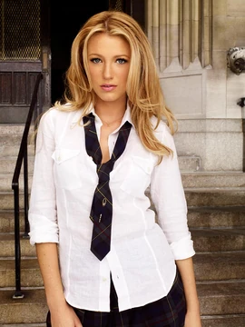
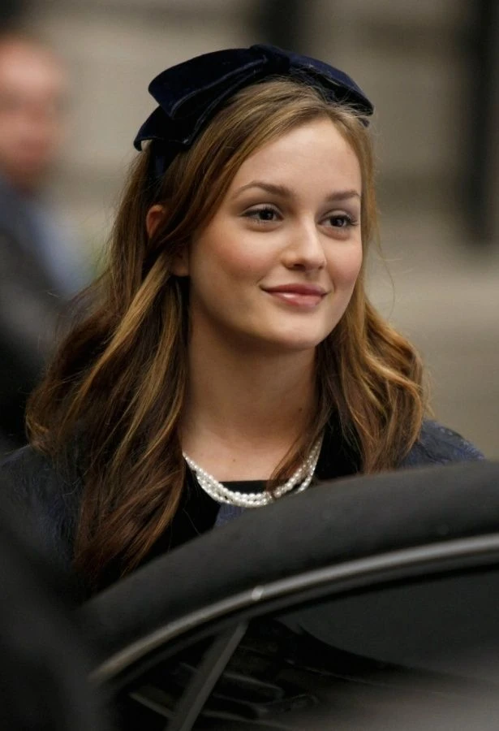
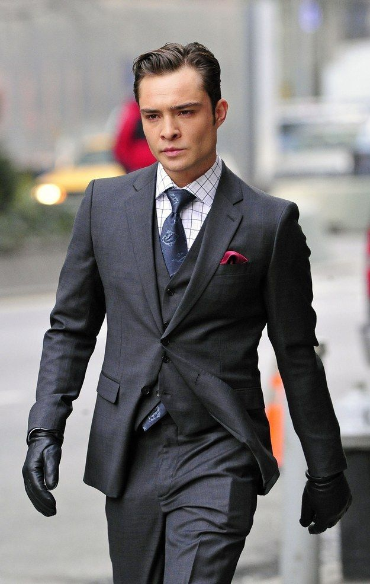
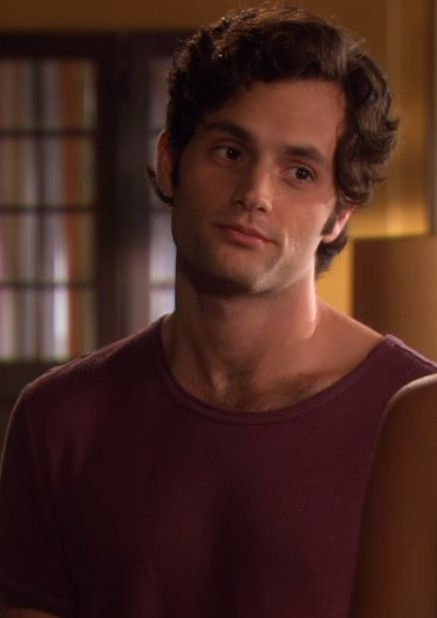

Serena van der Woodsen
Carismática, elegante y rebelde, Serena es el alma de la fiesta y el centro de atención del Upper East Side. Su regreso al comienzo de la serie marca el inicio del drama, y su vida amorosa y familiar es una constante montaña rusa.
Blair Waldorf
La perfeccionista, ambiciosa y sofisticada “Queen B”. Blair domina Constance con inteligencia y manipulación. Aunque lucha con inseguridades, su evolución la lleva a ser una de las figuras más fuertes de la serie.
Chuck Bass
Rico, enigmático y con un pasado turbulento, Chuck es uno de los personajes más complejos de la serie. Su relación con Blair es central en la trama, marcada por altibajos y una evolución emocional profunda.
Dan Humphrey
El "chico solitario" de Brooklyn que se infiltra en el mundo de la élite. Dan es sensible, escritor y muchas veces el outsider del grupo. Su perspectiva diferente aporta contraste al estilo de vida del Upper East Side.
Nate Archibald
Guapo, carismático y con una familia poderosa detrás, Nate intenta encontrar su camino más allá de las expectativas familiares. Su lealtad y búsqueda de independencia lo convierten en una figura querida y estable.
Jenny Humphrey
La hermana menor de Dan, Jenny pasa de ser una chica tímida a intentar conquistar el poder en Constance. Su transformación la lleva por caminos oscuros, enfrentando las consecuencias de sus ambiciones.